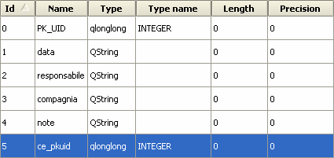
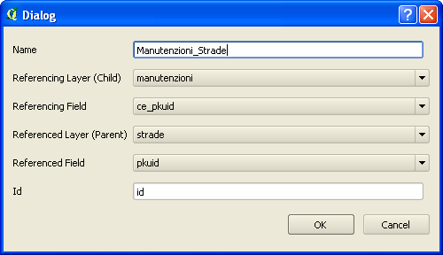
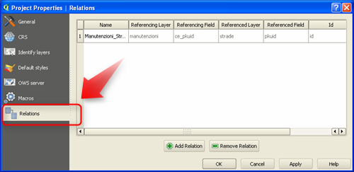
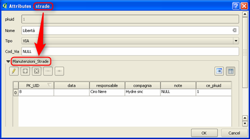
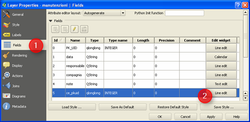
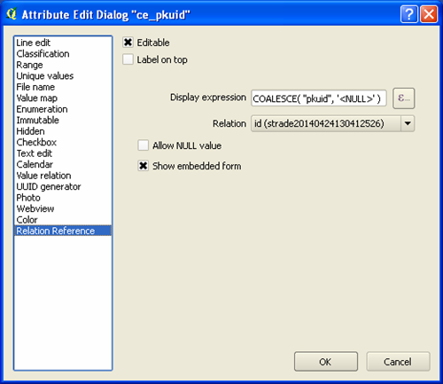
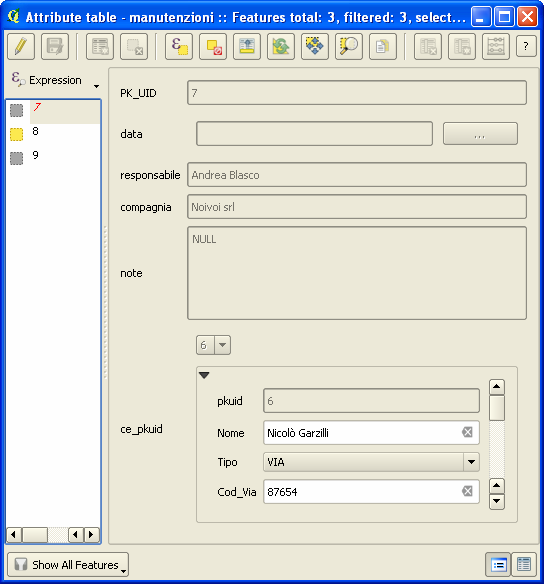
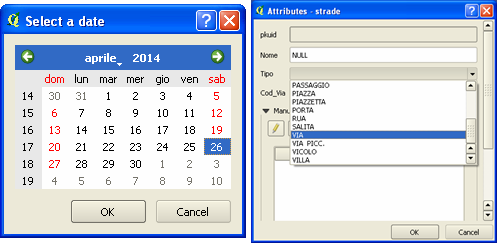

Le relazioni in QGIS consentono di sviluppare dei casi d’uso applicativi molto interessanti; una delle ragioni del post è quella di contribuire alla diffusione della conoscenza del tema.
Il caso d’uso: le strade e la loro manutenzione
Immaginate di essere i gestori del network della rete stradale della vostra città e di volere utilizzare QGIS (insieme ad altri strumenti) per farlo. Avete quindi un layer cartografico con tutte le strade (e i relativi attributi) e la necessità di associare a questo il dataset delle manutenzioni che vengono realizzate nei vari componenti della rete.
A seguire vedremo come gestire la cosa con QGIS, le relazioni e con il comodo supporto delle maschere di input personalizzabili.
Chiavi e relazione
Per mettere in relazione il dataset delle manutenzioni con quello delle strade, potrete usare il meccanismo classico delle chiavi.
Il layer delle strade sarà caratterizzato da un campo con un codice identificativo numerico univoco per ogni strada – la chiave primaria - denominato nell’esempio di questo post “pkuid”.
Il database delle manutenzioni – che è una semplice tabella senza alcun attributo spaziale – è composto dai campi “PK_UID”, “data”, “responsabile”, “compagnia”, “note”; aggiungeremo un campo che contenga il codice identificativo della strada a cui la manutezione è riferita. Questo campo farà da chiave esterna e si chiamerà “ce_pkuid”.
Il nostro modello prevede, per semplicità, che ad ogni strada sia possibile associare una o più manutenzioni; una classica relazione 1:N impostata sulle due chiavi numeriche di cui sopra.
Layer
Il layer delle strade ha la struttura sottostante, in cui sono stati introdotti dei campi per raccogliere il nome della Via, il relativo tipo (Corso, Viale, Via, ecc.) e il codice identificativo comunale.

Quello delle manutenzioni conterrà un codice identificativo numerico univoco per ogni elemento, un campo in cui inserire la data dell’intervento di manutenzione, il nome del responsabile, il nome della compagnia incaricata e un campo per le note.

Definire la relazione
La relazione tra i due dataset si definisce a livello di “Proprietà di progetto”. Aperto il tab Relations si farà click su “Add Relation” e si imposteranno i seguenti parametri:
- Name, per dare un nome alla relazione;
- Referencing Layer (Child), per il nome del layer che contiene la chiave esterna;
- Referencing Field, per il nome della chiave esterna;
- Referencing Layer (Parent), per il nome del layer che contiene la chiave primaria;
- Referencing Field, per il nome della chiave primaria;
- Id, che viene usato internamente da QGIS, deve essere univoco e fa da indice della tabella di relazione tra chiave primaria e chiave esterna.

A relazione definita, questa apparirà nella finestra di dialogo:

Moduli
Una volta definita la relazione, se ne avrà evidenza anche nel modulo di inserimento/modifica degli attributi del dataset delle strade. La visualizzazione a moduli in QGIS è molto utile per alcuni task di verifica ed inserimento dei dati, ed è molto personalizzabile.

La tabella della manutenzioni sarà visibile in un widget del modulo dello strade, e sopra questa saranno visibili cinque pulsanti:
- la matita, per attivare la modifica della tabella delle manutenzioni;
- il “+” per aggiungere un nuovo record alla tabella, che di default verrà associato all’elemento attivo del layer “strade”;
- il tasto “x” per cancellare il record selezionato della tabella “manutenzioni”;
- il tasto “catenella” che aprirà una nuova finestra di dialogo con il quale associare qualsiasi manutenzione presente alla strada corrente;
- il tasto “rompi catenella” che rimuoverà l’associazione tra la manutenzione selezionata e la strada corrente;
- ed infine, a destra, ci sono due pulsanti per passare dalla vista “tabella” a quella modulo.
Anche per il dataset delle manutenzioni è possibile attivare il modulo di inserimento/modifica degli attributi, in modo che dia conto visivamente della relazione con il layer delle strade.
A partire dalle proprietà del layer manutenzioni, bisognerà modificare il widget del campo che fa da chiave esterna.

E scegliere come tipo di widget “Relation Reference”, utilizzando i parametri visibili nella figura sottostante:

Una volta scelto questo speciale widget, sarà possibile leggere la relazione tra i due layer anche nel modulo delle manutezioni:

Note finali (riferimenti, file esempio e video demo)
Questo articolo è quasi una traduzione di questo di Matthias Kuhn. Sono caduto nel suo bel blog, perché tra i tipi di widget accessibili nelle proprietà dei campi di un layer ho scoperto il tipo “Relation Reference”. A me era completamente ignoto; ho provato a cercare nella documentazione, senza però trovarne traccia. Il post di Matthias mi è sembrata una piccola perla e ho creduto utile clonarlo.
Da qui potrete scaricare un file di progetto d’esempio basato su QGIS 2.2 e come formato dati su SpatiaLite. Questo ultimo farà da contenitore unico sia del file spaziale (le strade), che della tabella delle manutenzioni.
Nel progetto, per i due moduli, ho impostato altri widget diversi da quello di default (“Line edit”); alcuni sono di grande comodità come quello per il campo “data” delle manutenzioni (widget di tipo “Calendar”), o l’elenco controllato del campo “Tipo” (widget di tipo “Value map”) del layer delle strade.

Per chi vuole vedere la cosa in azione ho preparato un piccolo video, che non ha alcuna pretesa didattica. Vuole essere soltanto una carrelata visuale rapida di alcune delle cose descritte in questo post.
Un’ultima annotazione finale: il caso d’uso descritto è molto semplificato e non tiene conto di tutte i requisiti di un’applicazione complessa come la gestione di un network stradale. Mi è stato utile come esempio per scrivere di QGIS, relazioni, moduli e widget.
NdR: Salvatore Fiandaca, prendendo spunto da questo post, ne ha creato una sorta di versione aggiornata che trovate qui. Ringraziamo Totò e consigliamo la lettura